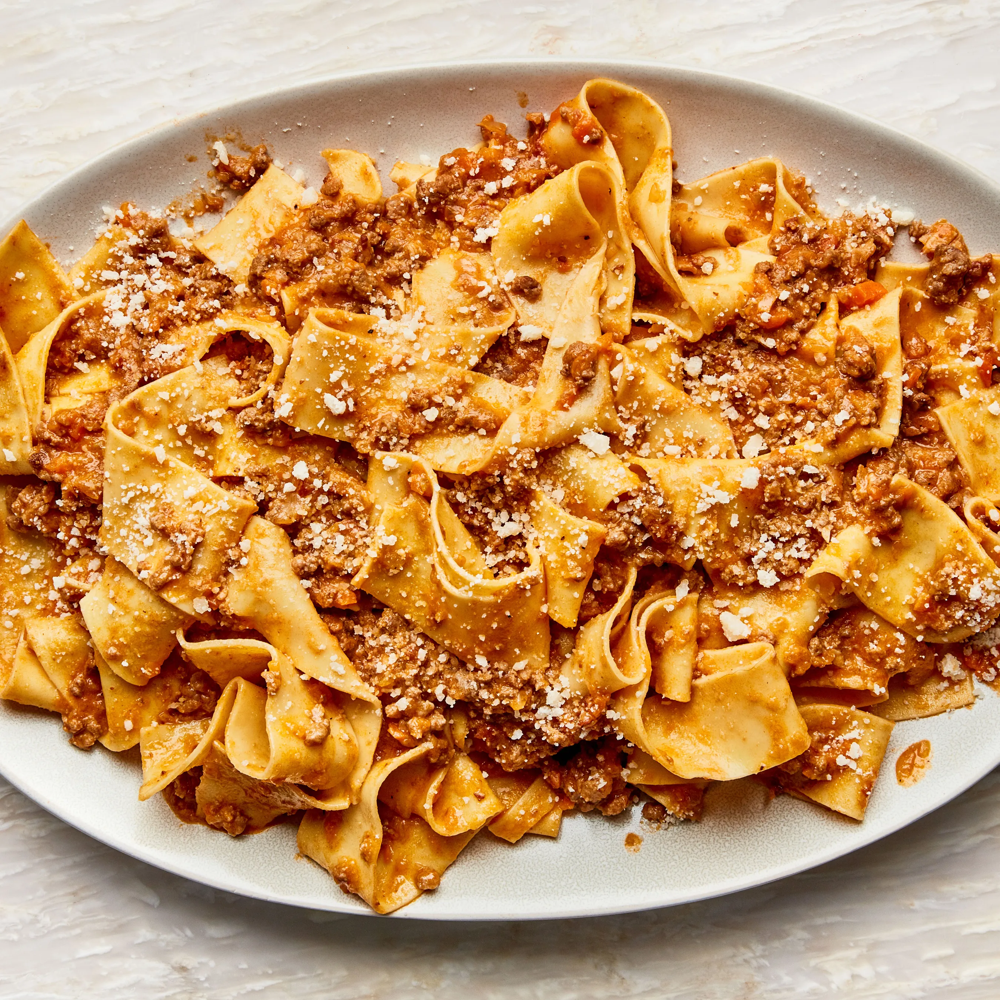

Bolognaise Recipe

Description
Our best ever spaghetti bolognese is super easy and a true Italian classic
with a meaty, chilli sauce. This pasta bolognese recipe is sure to become
a family favourite.
Ingredients
- olive oil
- bacon
- carrots
- celery sticks
- pasta
- beef mince
Steps
- Put a large saucepan on a medium heat and add 1 tbsp olive oil.
-
Add 4 finely chopped bacon rashers and fry for 10 mins until golden and
crisp.
-
Reduce the heat and add the 2 onions, 2 carrots, 2 celery sticks, 2
garlic cloves and the leaves from 2-3 sprigs rosemary, all finely
chopped, then fry for 10 mins. Stir the veg often until it softens.
-
Increase the heat to medium-high, add 500g beef mince and cook stirring
for 3-4 mins until the meat is browned all over.
Back to Home